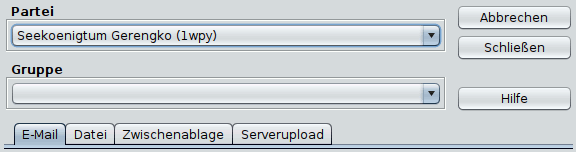

Befehle speichern

Zum Speichern/Verschicken der Befehle stehen folgende Optionen zur
Verfügung:
- Speichern:
speichert die Befehlsdatei am
angegebenen Ort.
- Zwischenablage:
kopiert die Befehlsdatei in die
Zwischenablage. Von dort kann sie z.B. sehr einfach in ein Mailprogramm
übernommen werden.
- Mail:
verschickt die Befehle direkt per Mail.
Dabei werden die Einstellungen im unteren Teil des Dialoges verwendet:
- SMTP-Server:
Hier trägt man den Mailserver
seines Internetproviders ein. Im Zweifel dort nachfragen.
- Authentifizierung:
Mittlerweile benötigen die
meisten Mailserver eine Authentifizierung. Hier kann man diese
Einstellungen setzen. Magellan versucht dann, sich am SMTP Server
mit ASMTP anzumelden (TLS supported).
- Empfängeradresse:
Hier wird die Mail-Adresse
des Eressea-Servers angegeben. (default wird aus der Reportdatei
geladen bzw. "eressea-server@eressea.kn-bremen.de").
- Absenderadresse:
Hier trägt man die eigene
Mailadresse ein.
- Subject:
Der Betreff der Mail (default:
"Eressea Befehle").
- Auto-Dateiname:
generiert einen Dateinamen zur
Speicherung der Befehle als Datei.
Als Vorlage dient der in den
Optionen (System)
definierte Text.
- Schließen:
schließt den Dialog.
Ausgabeoptionen
- Automatischer Zeilenumbruch
bricht die
Befehlsdatei nach n Zeichen um. Längere Zeilen (Beschreibungen,
Botschaften, etc.) werden dabei automatisch mit " \" getrennt.
Vermeidet Probleme mit dem automatischen Zeilenumbruch von
Mailprogrammen.
- ECHECK-Kommentare
fügt ECHECK-Kommentare (wie
Angaben über Silber und Personen) in die Befehlsdatei ein.
- mit ';' beginnende Kommentare entfernen:
entfernt
nichtpersistente Kommentare aus der Befehlsdatei. Nach Möglichkeit
sollte diese Option zum verschicken der Mail an den Eressea-Server
angewählt sein um die Befehlsdatei so klein wie möglich zu machen.
Allerdings gehen hierbei auch die Informationen über die Bestätigung
der Befehle der Einheiten verloren, da diese in ';'-Kommentaren
abgelegt werden.
- mit '//' beginnende Kommentare entfernen:
entfernt
persistente Kommentare aus der Befehlsdatei. Vorlage-Benutzer sollten
diese Option tunlichst nicht benutzen, da so auch alle Metabefehle
gelöscht werden.
- nur Einheiten mit bestätigten Befehlen:
Nur
Befehle bestätigter Einheiten werden geschrieben. Unbestätigte
Einheiten werden ignoriert. Diese Option ist sehr praktisch für
Spieler, die sich eine Partei teilen.
- Ausgewählte Regionen:
Hiermit kann man festlegen,
dass nur Befehle für Einheiten verschickt werden, die gerade ausgewählt
(selektiert) sind. So kann man stückweise Befehle an den Server
schicken.
- Unbekannte Tags als Vorlage einfügen:
Damit werden
unbekannte Tags in die Befehlsdatei geschrieben.